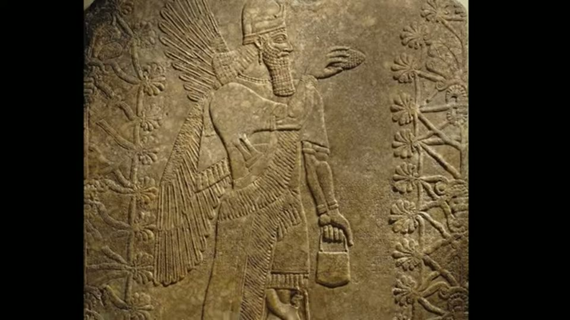
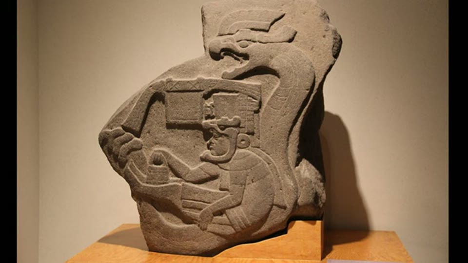
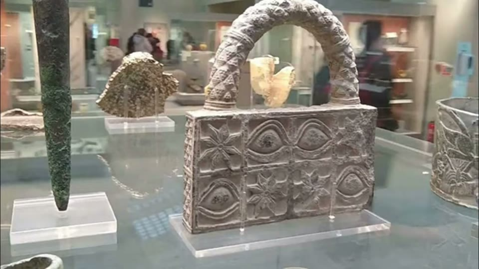
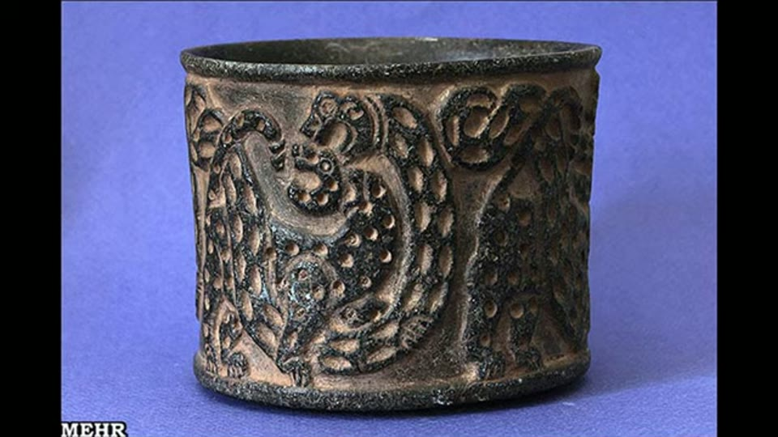
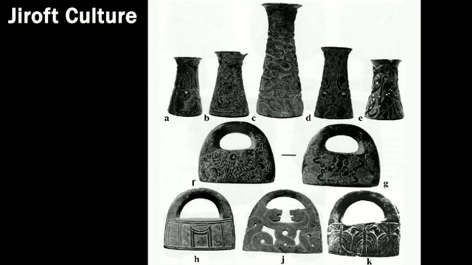
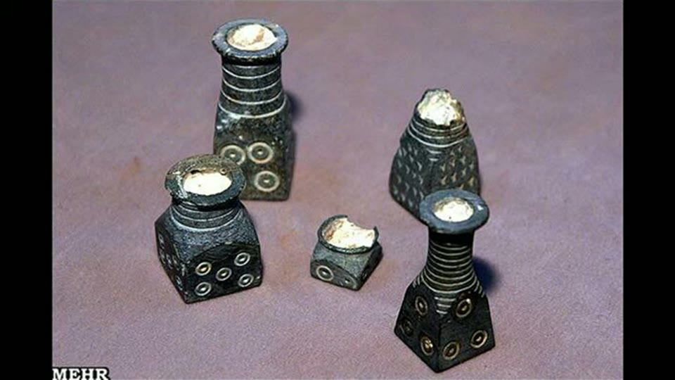
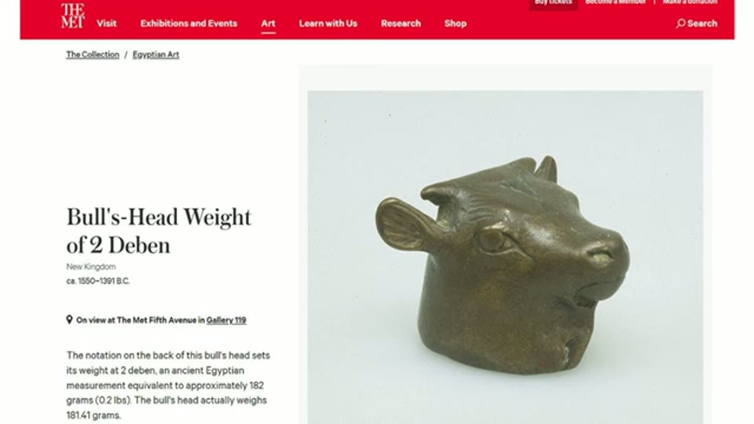
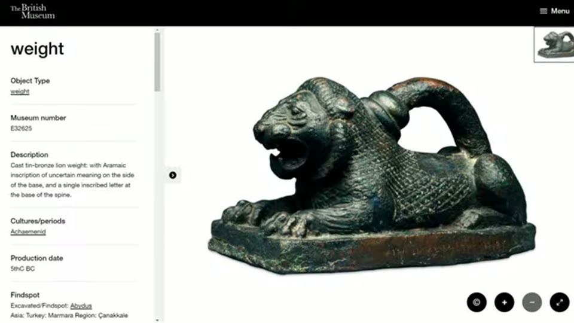
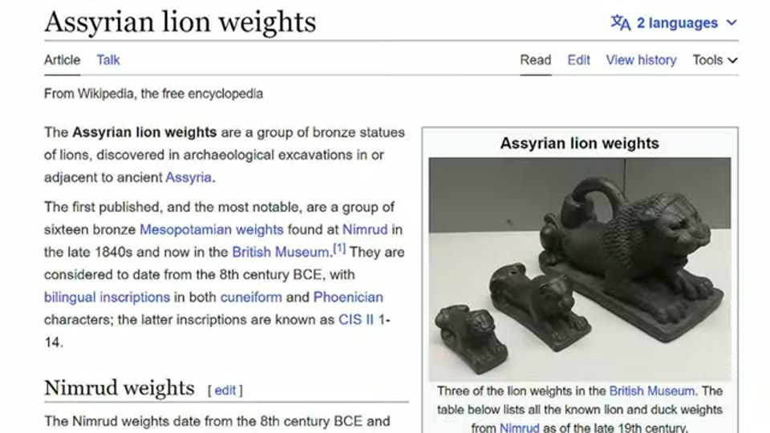
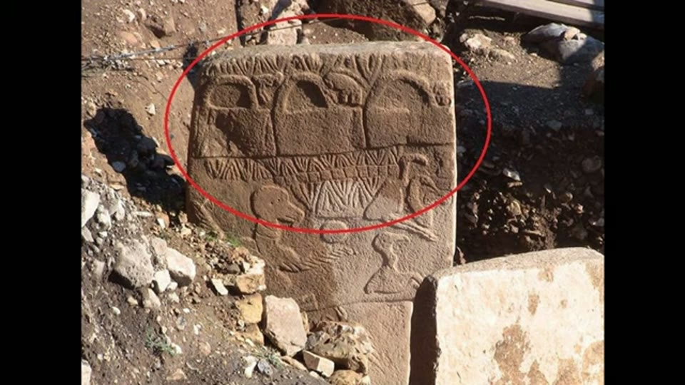

Curious Being
The Ancient “Handbag” Symbol Found Worldwide: What Did It Mean?
Tina · 16 min · watch on YouTube · summarised 2026-08-22
The handbag motif is the single most-cited cross-continental symbol in alternative ancient history. This video takes it apart — and it comes from a channel whose whole thesis is a lost prehistoric industrial civilisation. She says so explicitly 15:11: "the handbag debate might not lead to previous civilizations or ancient aliens visiting earth."
She keeps the two things separate. Her megalithic argument is untouched; this particular mystery, she thinks, is a misreading.
What is claimed
Handbag-like objects appear 00:19–00:43 carried by the winged genies of Mesopotamia, on top of a pillar at Göbekli Tepe, in an Olmec carving at La Venta, as stone objects of the Jiroft culture in Iran, and in the Māori story of the three baskets of knowledge. The proposals she names for what they mean: time travel, ancient aliens, or containers of forgotten knowledge.


The two cases where somebody is actually holding the object, which is why she treats these as possibly real containers and sets them aside.
She is precise about why this motif attracts speculation and spears and bows do not 00:51–01:16: the contents are hidden from the viewer. A weapon explains itself; a closed bag does not, and the gap gets filled.
Argument 1 — the dates do not line up
Her chronology 01:48–02:44:
| depiction | date |
|---|---|
| Göbekli Tepe pillar | 10,000–8,000 BC |
| Jiroft stone "bags" | 3rd millennium BC |
| Neo-Assyrian genie reliefs | 9th century BC |
| Olmec carving, La Venta | 900–400 BC |
| Māori baskets of knowledge | 13th century AD, after the migration from Polynesia |
The examples are separated by one to five thousand years each. Her inference 02:50–03:08: if these shared a symbolic meaning, there would be far more surviving instances than five scattered across ten millennia. The sparseness is itself the evidence — a live tradition leaves more traces than this.
She also splits the set on a formal criterion 03:36–03:56. In the Assyrian and Olmec reliefs someone is holding the object, so those could genuinely be bags, buckets or baskets — in an earlier video she argued the Assyrian ones are pollen buckets for pollinating date palms, or water containers for sprinkling rituals. At Göbekli Tepe and in the Jiroft finds the objects stand alone, with no person and no hand. Those are the ones she takes on.
Argument 2 — the Jiroft "bags" are solid stone
The Jiroft objects are the closest formal match to the Göbekli Tepe carvings, and unlike a carving they are physical things that can be examined 04:07–06:12. Over a thousand carved stone pieces at Tepe Yahya, which was a production and distribution centre in the 3rd millennium BC; more than 500 vessels, bags and fragments recovered from Uzbekistan and the Indus Valley east to Susa and the major Sumerian sites; chlorite-rich soapstone from southern Iran, soft to carve, durable, heat-resistant. Some carry cuneiform inscriptions naming rulers and Sumerian deities. One example she shows came from Ur, 2600–2400 BC.


The Near Eastern objects that most closely match the Göbekli Tepe carvings, and, unlike a carving, things you can pick up and examine.
Then the observation the whole video turns on 06:24–06:32: they are solid stone. There is no opening. Nothing can go in them.

The observation the whole video turns on: the bag-shaped pieces have a pierced handle and no cavity at all. Nothing can be carried in them.
And the pre-emption of the obvious objection 06:32–06:52 is what makes it an argument rather than a remark: the same workshops produced thin-edged vessels and small cosmetic bottles, so these carvers plainly could hollow stone when they wanted to. They did not hollow these. Solid by design. A solid object with no cavity is not a handbag and is not a depiction of one.

The same carvers hollowed stone whenever they wanted to. They did not hollow the bags, so the bags are solid by design.
Argument 3 — what they are instead
Stone is dense, so a small piece is heavy — and Bronze Age Mesopotamia, Egypt and the Indus Valley all ran standardised stone weights for trade 07:19–07:54. The Indus used cubes; Egypt and Mesopotamia used both plain shapes and animal forms: bull heads, ducks, rabbits, frogs, hippos 08:23–08:38.

Ancient weights were routinely made as figures rather than plain lumps, so being decorative is no argument against being a weight.
The bridge to the bag shape is the handle 08:58–09:51. Assyrian bronze lion weights carry handles on top. A light weight can be picked up with two fingers; a heavy one needs a full arm, and has to come on and off the scale repeatedly. She supports this with two independent cases: Qin dynasty weights, standardised across China over 2,200 years ago, made with handles or with openings for a stick so two people could carry them; and the familiar vintage weights in a wooden box, which also have handles on top.


A handle on top is what a heavy weight needs, because it has to come on and off the scale repeatedly. On that reading the bag outline is a handle on a lump of stone.
So the handle is functional, and the "bag" outline is a handle on a lump of stone.
She then answers the aesthetic objection 10:10–10:44 — why decorate a weight? — by noting the Sumerian and Egyptian weights are already decorative, that Roman and Byzantine steelyard weights are cast as portrait busts 12:43–13:01, and that weights mattered commercially enough to be worth personalising. Her closing proposal 13:23–14:29 is that the Jiroft bags were special weights commissioned by prestigious families, institutions or temples, and that some of the accompanying vessels were standardised measuring cups — durable, cheaper than bronze, and hard to counterfeit because each design is distinctive.
What she does with Göbekli Tepe
She does not stretch the conclusion to cover it 15:18–15:51. There is "not much contextual information to postulate"; she leans towards a utilitarian reading because she thinks prehistoric art came from nature and basic needs, and defers her actual guess to a later video.

The most famous instance, and the one her argument deliberately does not settle: here the shapes stand alone, with no person and no hand.
What you can check yourself
- Solid or hollow is the entire load-bearing claim and it is a museum-case observation. The Jiroft and Tepe Yahya material is published and held in collections.
- Thin-walled vessels from the same assemblage — the capability argument stands or falls on whether those really do come from the same workshops.
- Handled weights at Nimrud, in Qin China, and in Roman steelyard sets are all catalogued objects, not reconstructions.
- The chronology is conventional dating throughout. Unusually for this channel, she is using the accepted dates rather than disputing them.
- Thomas G. Chondros is named as the source for the steelyard balance appearing in the Near East over 5,000 years ago — a citable claim.
- She shows her sources on screen. The weight comparisons are screen captures of the Metropolitan Museum and British Museum catalogue entries and the Wikipedia article on the Assyrian lion weights, so a reader can go to the same records. That is rare enough in this material to be worth noting.
What the video does not settle
- No weight data. The argument would be settled by mass: if a set of Jiroft bags clusters on multiples of a known Mesopotamian shekel or Indus unit, the case is made. She never mentions whether anyone has weighed them, and this is the obvious missing test.
- No wear analysis. Weights in daily commercial use for generations should show handling wear on the handle and the base.
- The lion weight she shows is not Assyrian. The narration says "these Assyrian bronze lion weights", but the British Museum page on screen at 08:58 records the object as Achaemenid, 5th century BC — several centuries later and a different empire. The Assyrian lion weights from Nimrud are real and she shows them a moment afterwards, so the point survives; the specific object is mislabelled.
- The argument from sparseness cuts both ways. "If it were a shared symbol there would be more examples" assumes a survival rate for perishable depictions that she does not estimate.
- Göbekli Tepe is left open, which is honest, but it also means the most famous instance — and the one that generates the mystery — is untouched by the argument. A solid stone object in Iran does not tell you what a carving in Turkey five thousand years earlier depicts.
- The Olmec and Assyrian cases are set aside rather than resolved, on the reasonable ground that a held object could be a real container.
What we have not checked
- Transcript spellings corrected: Apkallu (transcript "Apakllu"), Göbekli Tepe, Māori. The Apkallu spelling is inferred from context, not heard clearly.
- She does not number the Göbekli Tepe pillar, so it is not numbered here either.
- "Neo-Assyrian genie reliefs, 9th century BC" is her dating; the best-known examples are from Nimrud, which is listed in the sites here as the likely provenance but is not named in the video.